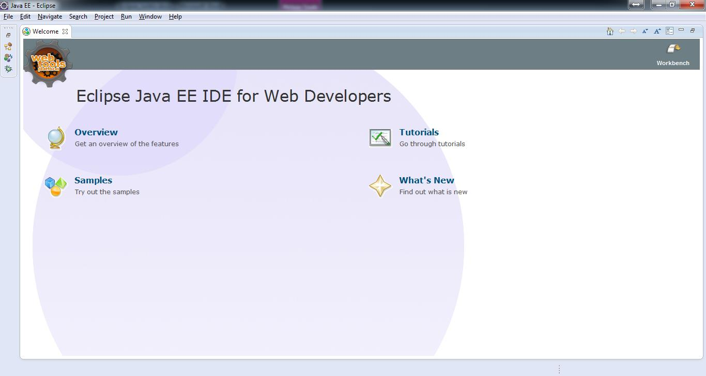

<h1>Käyttöliittymä</h1>

<div class="pictext">

<ul class="pictext_list">
<li>Aloitusnäkymästä löytyy tietoa Eclipsen ominaisuuksista ja harjoituksia</li>
<li>Workspace-nappulasta päästään perusnäkymään, jota käytetään ohjelmointiin</li>
</ul>
</div>